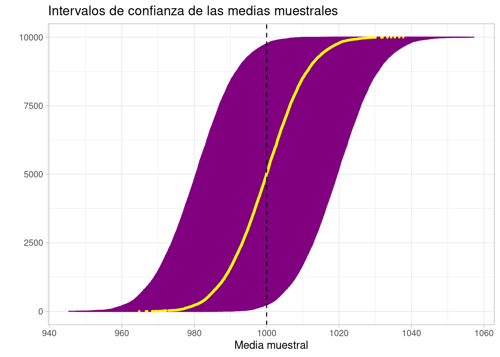
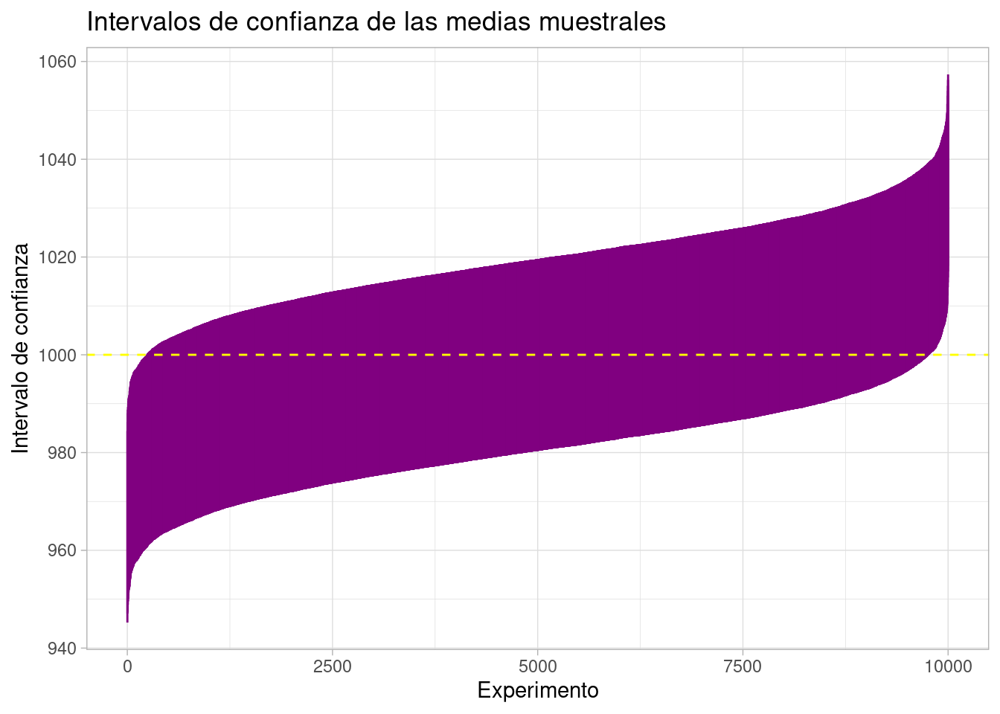

set.seed(3718)
sample_size <- 100
population_mean <- 1000
population_sd <- 100
norm_values <- rnorm(sample_size, population_mean, population_sd)
sample_mean <- mean(norm_values)Creo que no entendí qué eran los intervalos de confianza en ninguna clase de estadística.
A ver, no digo que no me los explicaran.
Digo que, pese a que me los explicaron, no entendí nada de ellos.
En el mundo laboral me encuentro con dos situaciones contradictorias:
- Hay personas que defienden que todas las estimaciones que se dan deberían incluir los intervalos de confianza.
- Pero hay personas, normalmente los consumidores o clientes de esas estimaciones, que no tienen ni idea de qué es un intervalo de confianza.
Y no digo que sea culpa suya.
La verdad, con lo complicado que es el concepto (porque no tiene ni pies ni cabeza) y lo mal que lo dan, normal que no se enteren.
¿Se deberían dar los intervalos de confianza? Pues dado que algo de la incertidumbre de tus estimaciones deberías dar, mientras no tengas nada mejor, sí, deberías darlos.
Te muestro aquí un ejemplo de cómo se interpretan.
Cálculo del intervalo
Voy a usar un ejemplo muy concreto.
¿Significa eso que lo que te voy a explicar solo sirve para este ejemplo?
No, es extrapolable. Pero necesito un ejemplo concreto porque si no, pasa lo de siempre: que nadie se entera de nada.
El ejemplo es estimar la media de una población a partir de la media de una muestra. Parece una bobada, lo sé, pero verás en breve que hay cierta incertidumbre al usar la media muestral para esto.
Con esto no digo que no uses la media muestral. Lo que digo es que seas consciente de que hay cierta incertidumbre.
Para jugar con esta incertidumbre, voy a recrear un ejemplo del que conozco la media poblacional, y veremos qué tal se comporta la media muestra.
Uso una población de distribución normal de media 1000 y desviación típica 100. ¿Lo puedes hacer con otros números? Sí, claro. Ya te he dicho que esto es extrapolable a cualquier cosa de estimación.
Voy a tomar una muestra de tamaño 100 de esta población. Y calculo la media y desviación típica.
La media muestral es 1007.718297.
El objetivo de estos párrafos es calcular el intervalo de confianza para esa estimación, o sea, a la hora de usar la media muestral como estimación de la media poblacional.
Para ello necesitamos la media y desviación típica poblacional[^1] (las tenemos), el tamaño muestral (me lo he inventado yo, 100).
[^1 Si no tienes la poblacional y usas una muestral necesitas hacer un ajuste en lo que voy a contar hoy. Te lo cuento otro día.]
Y necesitamos también los valores de la distribución normal que delimitan la confianza al nivel que queramos (95% para no salir de lo habitual). En R lo puedes calcular con qnorm(0.975) y qnorm(0.025).
El intervalo estará centrado en tu media muestral. Las cotas vendrán dadas por un margen de error.
Este margen de error se calcula con:
- La desviación típica poblacional.
- La raíz cuadrada del tamaño muestral.
- Un valor que ahora te explico.
La desviación típica de la muestra dividida por la raíz cuadrada del tamaño muestral no es un valor cualquiera. Es la desviación típica de la media muestral.
O sea, tienes una población, y tomas una muestra; con esa muestra te calculas la media y te la guardas. Ahora tomas otra muestra, vuelves a calcular la media y te la guardas. Y así muchas veces. Todas estas medias no serán iguales entre sí: serán parecidas, y deberían estar cerca de la media poblacional, pero varían. Varían con una desviación típica. ¿Cuál? Ese valor que hemos dicho.
Mira.
Voy a calcular 1000 medias muestrales de diferentes muestras de tamaño 100 y calculo su desviación típica.
muchas_medias <- replicate(1000, {
mean(rnorm(sample_size, population_mean, population_sd))
})
sd(muchas_medias)[1] 10.00571Y ahora lo comparo con la división de la desviación típica de la población entre la raíz cuadrada del tamaño muestral: 10. ¿A que se parecen bastante?
Pero el margen de error no depende solo de eso, sino que falta el numerito extra. O sea, tiene sentido que el margen de error dependa de la desviación típica de lo que estás estimando, pero falta lo de la confianza. Si quieres mucha confianza, tendrás que aumentar de alguna forma el margen de error; y si quieres menos confianza, tendrás que reducirlo.
Para eso necesitas el estadístico \(z\). Nos interesa el intervalo de confianza al 95%, ¿no? Pues este valor \(z\) lo puedes ver como el valor de la distribución normal \(\mathcal{N}(0, 1)\) que deja a su izquierda el 95% de la probabilidad. O sea, los números mayores que él, solo aparecerán en una distribución normal con un 5% de probabilidad.
Al multiplicar este valor por la desviación típica de la media muestral, lo que estás haciendo es llevar el margen de error a la escala de tu población (y no dejarla en la de una normal 0-1).
Pues ahora ya está todo.
Si eres alguien anclado en el siglo XX, buscarás el valor de \(z\) en una tabla. Si vives en el presente, usarás algún software que te lo busque.
En R puedes usar la función qnorm().
Quieres el 95% de probabilidad, pero ten en cuenta que la distribución normal es simétrica. Así que necesitas el extremo que deje el 2.5% a su derecha y el que deje el 2.5% a su izquierda. Lo puedes hacer con qnorm(c(0.025, 0.975)).
El resultado es que el intervalo es (988.1186572, 1027.3179369).
Si tienes en cuenta que la media poblacional era 1000, no es una estimación horrible.
Pero…
Interpretación del intervalo
¿Cómo interpretas esos valores? La interpretación no es que el valor de la media poblacional está ahí dentro con un 95% de probabilidad.
La media poblacional es un dato, es una realidad. No sabemos si está dentro o no, pero no hay una probabilidad para indicar dónde está.
Vamos a ver cómo se interpreta.
En lugar de dar la definición formal de intervalo de confianza, que no hay dios que la entienda, vamos a construir muchos intervalos de confianza.
Construyo 10^{4} intervalos de confianza, cada uno a partir de una muestra diferente, pero todas provenientes de la misma población.
Cada muestra tendrá una media, que aprovecho y calculo también.
experiments <- lapply(seq_len(computations), function(i) {
compute_interval(sample_size, population_mean, population_sd)
})Fíjate en el siguiente gráfico. Ha habido muestras cuya media muestral ha sido cercana a 960 ó a 1040. Y esas muestras tendrán sus intervalos de confianza centrados en ese valor… tiene pinta de que van a estar lejos de la media poblacional.

De esos experimentos que hemos hecho, podemos extraer también los intervalos de confianza. Voy a intentar pintártelos para que veas dónde han caído.

Toda esa banda morada son los 10^{4} intervalos de confianza calculados. La línea amarilla realmente es una sucesión de puntos (como todas las líneas) con cada media muestral.
La línea negra es la media poblacional. Y fíjate…
